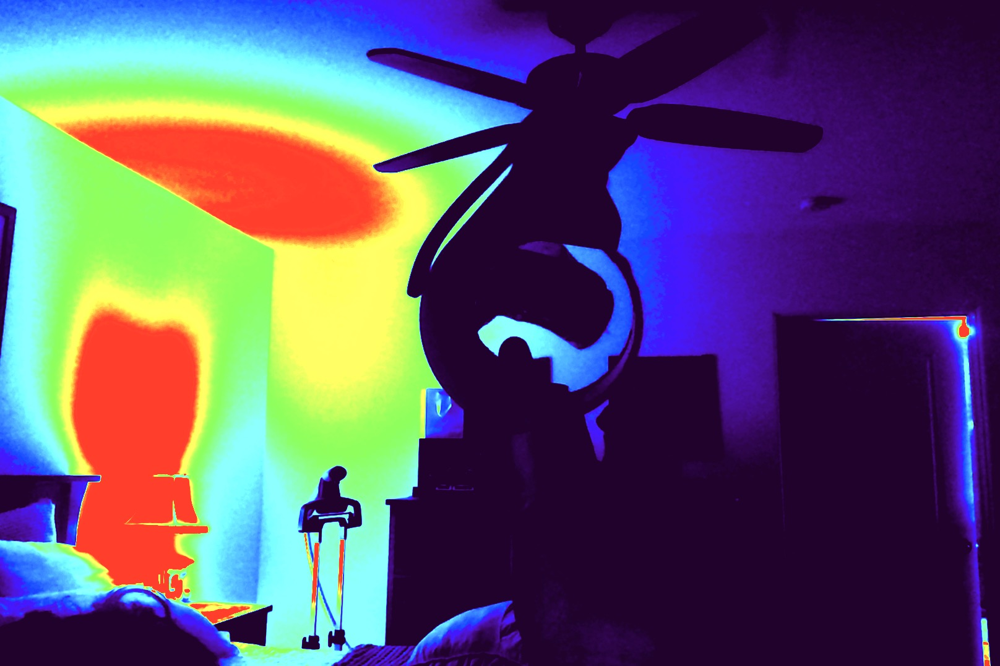

Ingredients
- 3 ½ teaspoons baking powder
- 1 teaspoon salt
- 1 tablespoon white sugar
- 1 ¼ cups milk
- 1 egg
Here is a video
Here is a Photo
The details element
Epcot Center
Epcot is a theme park at Walt Disney World Resort featuring exciting attractions, international pavilions, award-winning fireworks and seasonal special events.
The section element
WWF History
The World Wide Fund for Nature (WWF) is an international organization working on issues regarding the conservation, research and restoration of the environment, formerly named the World Wildlife Fund. WWF was founded in 1961.
Steps
Step 1
In a large bowl, sift together the flour, baking powder, salt and sugar. Make a well in the center and pour in the milk, egg and melted butter; mix until smooth.
Step 2
Heat a lightly oiled griddle or frying pan over medium-high heat. Pour or scoop the batter onto the griddle, using approximately 1/4 cup for each pancake. Brown on both sides and serve hot.